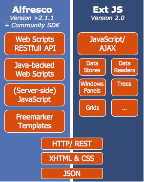

DoCASU in based on the
assembly of standard components leveraging both,
the Alfresco platform and
technologies as well as additional frameworks.
Alfresco Platform
Alfresco is a modern
state-of-the-art ECM built using Spring, Hibernate,
Lucene and jBPM based on standards such JSR-170, JSR-168,
Web Services and REST.